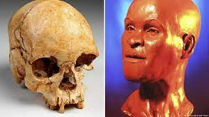

O crânio de Luzia, a mulher mais antiga do Brasil
Encontrado em Minas Gerais na década de 1970, este seria o fóssil mais antigo das Américas. Este material foi o responsável por mudar a teoria da povoação do continente americano. A busca pelo fóssil foi realizada a partir das obras emergenciais, que são realizadas há cerca de 1 mês. Essas intervenções, que custam R$ 9 milhões, devem ser realizadas até fevereiro de 2019. Além de Luzia, outros objetos foram encontrados no local.
“Estamos no momento do escoramento e já podemos recuperar algumas partes do acervo. Hoje é um dia feliz, conseguimos recuperar o crânio da Luzia, dano foi menor do que esperávamos. Os pedaços foram achados há alguns dias, eles sofreram alterações, danos, mas estamos muito otimistas com o achado e tudo que ele representa. Ele estava em um local preservado onde já ficava, que era um local estratégico. Ficava dentro de uma caixa de metal dentro de um armário”, disse Claudia Rodrigues uma das integrantes da equipe.